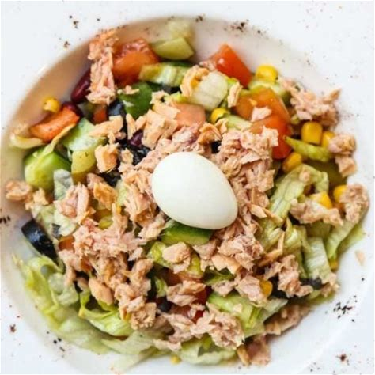

Salada para jantar light

Uma saladinha com atum para comer à noite. Prática e rápida de fazer!
Ingredientes
- 1 Lata atum (em agua)
- 1 Tomate (cortados em cubos)
- 1 Pepino (japones, com casca e picado em cubos)
- 2 Colheres de sopa cebola (picada)
- 3 Colheres de sopa pimentao-verde (sem sementes e picado em cubinhos)
- 2 Colheres de sopa azeitona (sem caroco e picada)
- Sal (a gosto)
Instruções
- Com exceção do atum e do sal, juntar todos os ingredientes em uma tigela e misturar bem.
- Temperar com um pouquinho de sal, mas sem exagerar, pois muito sal faz mal e a azeitona e o atum já são salgados. Misturar outra vez.
- Escorrer a água do atum e misturar o peixe na salada. Prontinho!
Feito por Lê silva.